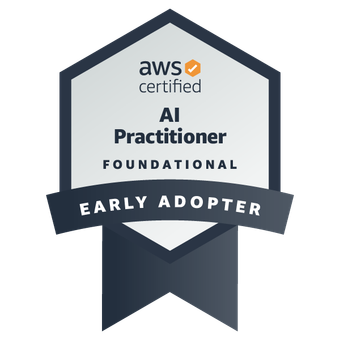
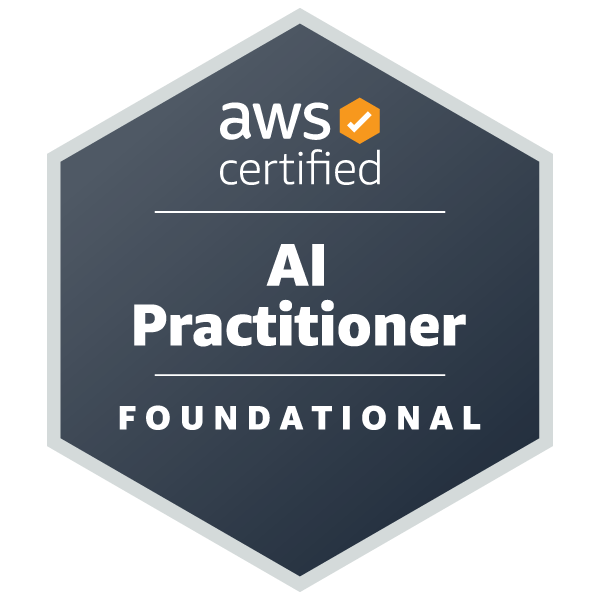
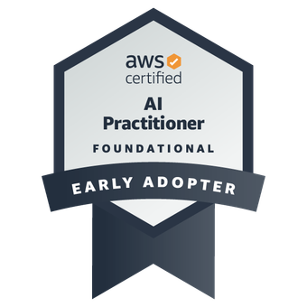
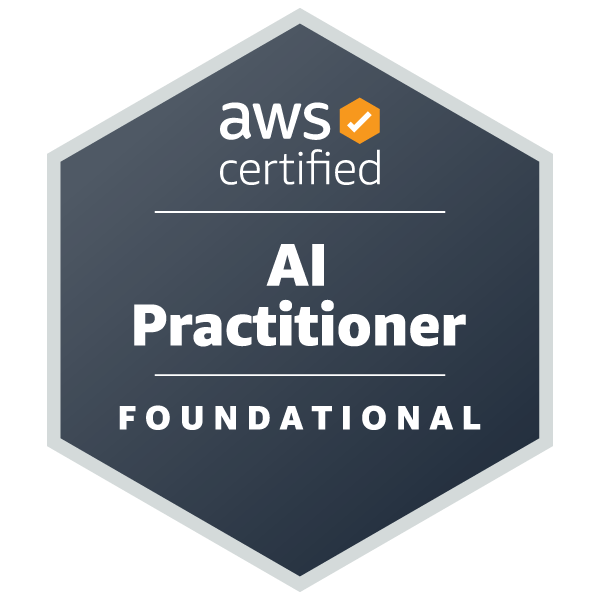

About
Welcome! I'm Sedrick, a recent graduate from the University of South Australia with a Bachelor's degree in Information Technology, where I achieved a GPA of 6.0/7.0. My academic journey has equipped me with a strong foundation in IT and data analytics, which I'm now applying and expanding in my professional career.
Currently, I'm serving as a Graduate Consultant and Software Developer at Akkodis, where I'm honing my expertise in AWS cloud technologies, particularly in application development. This role allows me to bridge the gap between theoretical knowledge and practical industry applications, pushing me to continuously learn and adapt in the fast-paced tech world.
I'm passionate about leveraging technology to drive business success and innovation. To further challenge myself and showcase my skills, I'm currently undertaking the Cloud Resume Challenge. This project involves building a full-stack application using AWS services, implementing DevOps practices, and demonstrating proficiency in front-end and back-end development.
Through the Cloud Resume Challenge, I'm expanding my skill set to include:
- AWS cloud services (S3, CloudFront, Route 53, DynamoDB, Lambda, API Gateway)
- Front-end development with HTML, CSS, and JavaScript
- Back-end programming using Python
- Infrastructure as Code (IaC) with AWS SAM
- CI/CD pipelines using GitHub Actions
- API development and integration
- Cloud security best practices
I'm always eager to learn and take on new challenges in the field of technology. If you're interested in collaborating or would like to know more about my work, please don't hesitate to reach out through the contact section of this resume.
 


